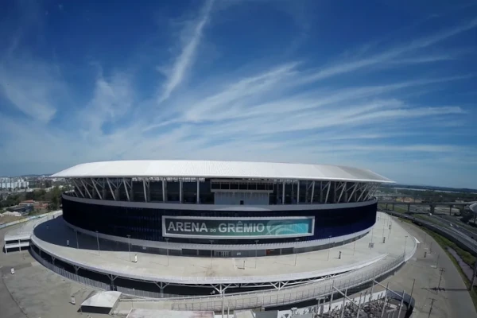
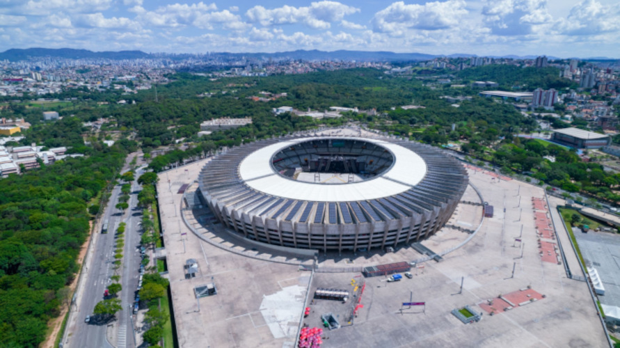
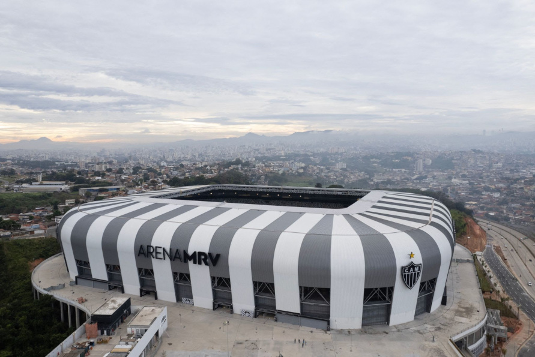

Internacional
O Sport Club Internacional, fundado em 1909 em Porto Alegre, é um dos clubes mais tradicionais do Brasil. Conhecido como Colorado, o Inter conquistou títulos importantes como a Libertadores da América (2006 e 2010) e o Mundial de Clubes da FIFA (2006). O clube tem forte tradição em revelar jogadores e é famoso pelo clássico Gre-Nal, uma das maiores rivalidades do futebol mundial. Sua torcida é reconhecida pela paixão e presença marcante no Estádio Beira-Rio.
Grêmio
O Grêmio Foot-Ball Porto Alegrense, fundado em 1903, também em Porto Alegre, é considerado um dos clubes mais vencedores do país. Conhecido como Imortal Tricolor, o clube possui conquistas como a Libertadores (1983, 1995 e 2017) e o Mundial Interclubes de 1983. A equipe gremista é marcada pela garra e espírito de luta, além de protagonizar o clássico Gre-Nal. Sua casa é a moderna Arena do Grêmio, palco de grandes partidas e de uma torcida apaixonada.
Cruzeiro
O Cruzeiro Esporte Clube, fundado em 1921 em Belo Horizonte, é um dos clubes mais tradicionais e vencedores do Brasil. Conhecido como Raposa, fez história com títulos importantes como o bicampeonato da Libertadores (1976 e 1997) e quatro edições do Campeonato Brasileiro. O Cruzeiro sempre foi destaque pela formação de grandes ídolos, como Tostão e Ronaldo Fenômeno, e é dono de uma das maiores torcidas do país. Manda seus jogos no Estádio Mineirão.
Atlético Mineiro
O Clube Atlético Mineiro, fundado em 1908 em Belo Horizonte, é um dos clubes mais antigos e populares do Brasil. Conhecido como Galo, conquistou títulos marcantes como a Copa Libertadores da América de 2013 e o Brasileirão de 2021. Reconhecido pela raça e pela paixão de sua torcida, o Atlético tem uma história rica e intensa no futebol brasileiro. O clube joga na Arena MRV, um dos estádios mais modernos da América Latina.
